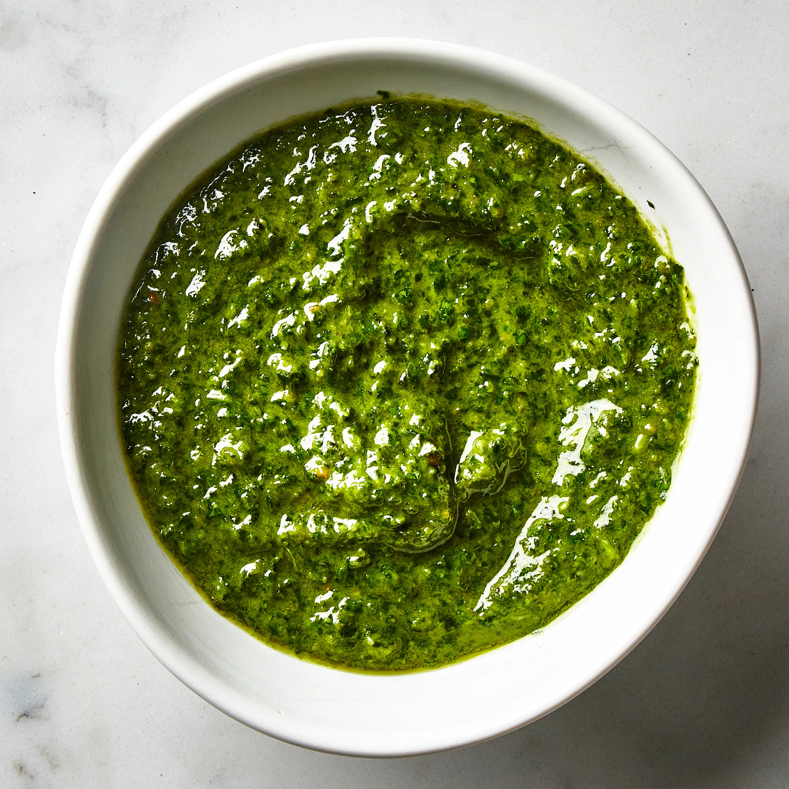

Pesto

Description
Traditional pesto is a blend of fresh basil, garlic, pine nuts, extra-virgin olive oil, and Parmesan cheese.
With a food processor, it comes together in just a few steps!
Ingredients
- Nuts
- Lemon juice
- Garlic
- Basil
- Olive oil
- Parmesan Cheese
Steps
- Pulse the nuts, lemon juice, and garlic in the food processor until they are finely chopped
- Add the basil and pulse again
- Next, drizzle in the olive oil with the food processor blade still running
- Finally, add grated Parmesan cheese and process briefly until combined